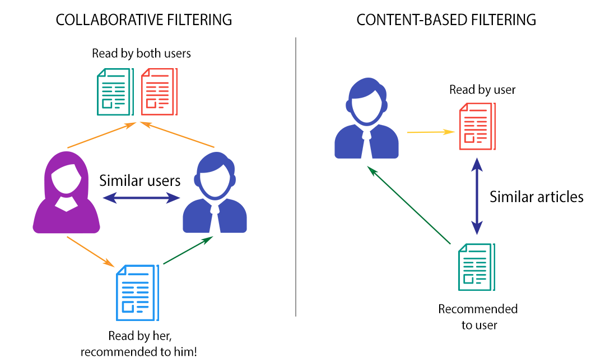
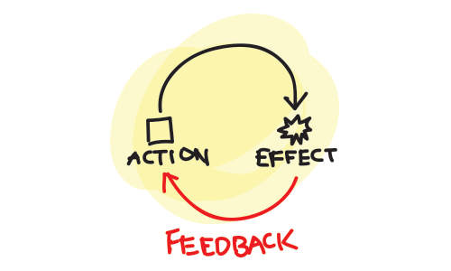

What is a Conspiracy Theory?
 A straightforward way of defining a conspiracy theory is "an attempt to explain an event that was caused by individuals".
This is topic is important as there have been an abundance of those just in the last century. Take for example the most
famous one known to date, the assasination of JFK. These conspiracy theories result in people lacking trust in certain sectors
of the world such as the government, large corporations, news outlets, etc ... These ideas or inferences created by individuals
cause not just paranoia in themselves but also in others which lead to harmful thoughts. This page will not discuss necessarily
those conspiracy theories, rather this will focus on describing certain algorithms used and the potential harm that could be caused.
A straightforward way of defining a conspiracy theory is "an attempt to explain an event that was caused by individuals".
This is topic is important as there have been an abundance of those just in the last century. Take for example the most
famous one known to date, the assasination of JFK. These conspiracy theories result in people lacking trust in certain sectors
of the world such as the government, large corporations, news outlets, etc ... These ideas or inferences created by individuals
cause not just paranoia in themselves but also in others which lead to harmful thoughts. This page will not discuss necessarily
those conspiracy theories, rather this will focus on describing certain algorithms used and the potential harm that could be caused.
Basics of Recommendation algorithm

The absolute main purpose of a recommendation algorithm is to suggest content relevant to the user. To simply put it when a user views or maybe interacts in some way with content, similar content is then found and suggested to the user. Looking into a deeper perspective the machine analyzes the users interactions and collects data which is then plugged into an algorithm, from there the algorithm takes place and returns suggestions that match the data given. There are two types, collaborative and content filtering. Content based filtering revolves around finding similar content to what a user might have interacted with, while collaborative based filtering relies on content similar users interact with to suggest to a user.Feedback Loop

This component of a recommendation algorithm can be thought of as a filter bubble. As an individual interacts in this bubble feedback is recived by the machine and the machine in turn refines these interactions(now data). The bubble as a result shrinks and content outside of this bubble begins to be rejected. User interactions is taken as data, then put into an algorithm which takes into consideration what the feedback was recieved(negative or positive), then returns similar preferences. Negative feedback is filtered while positive is further suggested. One can think of this as likes and dislikes, if a person likes a video YouTube's Feeback Loop would return content similar to that persons like and filter out disliked content.Conspiracy Theories & Algorithmic Amplification
As mentioned earlier Conspiracy Theories are, in short, sensational. Due to the sensation they convey they draw in lots of user interactions which affects the Recommendation Algorithm. As usual when a user interacts with whatever content they desire, the Algorithm will expand in that area of content. Conspiracy Theories, for the most part, are not good content as they can create distorted thoughts. The way these two tie together is that if the user continues to look into Conspiracy Theories, the Recommendation Algorithm will further expand on that content and suggest it. The end result is that the Algorithm then starts to suggest this type of content more and more. Take for example this study done to show how negative content has more interactions than positive content. Such false negative content is read by the Recommendation Algorithm and is amplified which then gets back to the user.
Platform Incentives
Incentives can be defined as a goal that is desired. As with most companies, they desire to hook the user to the platform and gain revenue. How do they acommplish this task? By using the Recommendation Algorithm, mind blowing! Take Twitter for example. Their goal is to "connect its users and allow them to share their thoughts with their followers and others through the use of hashtags", but another goal is to gain a source of income. For example the Feedback Loop, whatever content the user was hooked to is then be suggested to them in the form of an advertisment in order to make revenue. The issue is that at the same time they make revenue, the algorithm is narrowing down that 'Bubble' of content that user is exposed to. The company, likely without intent to do this, is being damaged in terms of the quality of their content displayed due to a lack in other viewpoints.
Potential for Explotation
Given the barebones of how a Recommendation Algorithm functions along with a actual component of the algorithm, the Feedback Loop, many have taken advantage of this to spread harmful content. Looking back at Conspiracy Theories they are mostly presented in a eye-catching way. Individuals with bad intentions know this and deliberately do this to engage a user. As a result the user consumes this harmful content and their mind is engaged with it. The Feedback Loop for example can be fed repeatedly harmful content and sent to the user while at the same time a companies Platform Incentives will be painted in a bad picture. People, if not careful, are almost or completely blinded by misleading content which can further expand to other platforms and pollute their Recommendation Algorithms. Others, not so easily persuaded, may view content in the platform as uncredible and conclude that the platform does not deserve peoples trust. The consequences of such intent lead to division amongst users along with damage to the platforms credibility.